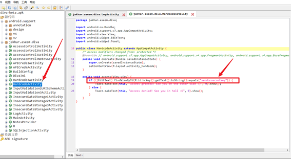

1. insecre logging
Objective: Find out what is being logged where/how and the vulnerable code
Hint: Insecure logging occurs when developers intentionally or unintentionally log sensitive information such as credentials, session IDs, financial details etc.
目标。找出被记录的地方/方式以及易受攻击的代码
提示：当开发人员有意或无意地记录敏感信息，如证书、会话ID、财务细节等，就会出现不安全的记录。
命令行使用ADB查看日志
首先查看设备，
D:\Program_Files\Nox\bin\nox_adb.exe devices
然后连接，使用参数logcat查看日志
D:\Program_Files\Nox\bin\nox_adb.exe -s 127.0.0.1:62001 logcat
App端输入数据，在日志中可以实时看到输入的数据
2. hardcoding issues part1
Objective : Find out what is hardcoded and where .
Hint :Developers sometimes will hardcode sensitive information for ease .
目标：找出什么是硬编码，在哪里。
提示：为了方便起见，开发人员有时会将敏感信息硬编码。
所谓的硬编码就是把字符串，Key，加密用的Salt写死在代码上
所以这里需要把APP反编译一下，使用工具jadx：https://github.com/skylot/jadx
反编译程序，找到hardcode这一关的代码，

可以看到一个if判断，判断的对象直接写死在表达式中，vendorsecretkey
3. insecure data Storage part1
Objective : Find out where / how the credentials are being stored and the vulnerable code
Hint ：Insecure data storage is the result of storing confidential information insecurely on the system i.e. poor encryption, plain text,access control issues etc
目标：找出凭证的存储位置/方式以及有漏洞的代码。脆弱的代码
提示: 不安全的数据存储是指在系统中不安全地存储机密信息的结果。不安全的数据存储是指在系统中不安全地存储机密信息的结果，即糟糕的加密，纯文本。 访问控制问题等
由于上一关反编译了，这里直接看源码，
使用的是SharedPreferences存储，没有加密，这个文件在系统目录中，安装root explorer.打开root,赋予root权限。
文件存在/data/data/jakhar.aseem.diva/shared_prefs目录下的xml文件中

输入的数据明文存储与xml文件里
4. insecure data Storage part2
看代码可知，这次的数据存在数据库中，代码里创建了一个叫IDS的数据库
App的数据库使用的都是sqlite，数据库文件存在/data/data/jakhar.aseem.diva/databases，文件名就是数据库名
查看数据
同时因为涉及到数据库，而参数没有过滤，这个语句存在sql注入，
Paylaod：
123’, sqlite_version() ,(‘123
123’,(select name from sqlite_master limit 0,1)),(‘123
123’,(select sql from sqlite_master limit 0,1)),(‘123

5. insecure data Storage part3
这个的数据使用createTempFile方法创建一个临时文件来存储数据，后面的getApplicationInfo().dataDir的路径为/data/user/0/jakhar.aseem.diva
关于路径的解读：https://blog.csdn.net/xiaol206/article/details/80149467
6. insecure data Storage part4
这个使用的同样是文件存储，在/storage/emulated/0目录下，创建一个.uinfo.txt来存放数据。要查看这个数据甚至不需要root
7. Input validation issues part1
Objective: Try to access all user data without knowing any user name.there are three users by default and your task is to output data of he three users with a single malicious search
Hint : Improper or no input validation issue arise when the input is not filtered or validated before using it. When developing components that take input from outside, always validate it. For ease of testing there are three users already present in the database , for example one of them is admin, you can try searching for admin to test the output.
目标:尝试在不知道任何用户名的情况下访问所有用户数据。默认情况下有三个用户，您的任务是通过一次恶意搜索输出三个用户的数据
提示:当输入在使用之前没有被过滤或验证时，会出现不正确或没有输入验证的问题。当开发从外部获取输入的组件时，始终要对其进行验证。为了便于测试，数据库中已经有三个用户，例如其中一个是admin，您可以尝试搜索admin来测试输出。
这一关需要查出数据库里的信息，应该就是一个sql注入简单测试了一下，
Payload：-1’or ‘1’=’1
8. Input validation issues part2
Objective: Try accessing any sensitive information apart from a web URL
Hint: Improper or no input validation issue arise when the input is not filtered or validated before using it. When developing components that take input from outside , always validate it .
目标：尝试访问任何敏感信息，除了网络URL之外。
提示：当输入在使用前没有被过滤或验证时，就会出现不适当或没有输入验证的问题。当开发从外部获取输入的组件时，一定要对其进行验证。
这关的目标是尝试访问除了网络URL之外的任何敏感信息。感觉就是web方面的本地文件包含
这个功能点是要获取web路径，所以应该是用的webview，既然要访问本地信息，可以用file://协议，然后试着获取一下上上关生成的文件
file:///storage/emulated/0/.uinfo.txt
后面看一下代码，发现整个功能点就一句话
1 | ((WebView) findViewById(R.id.ivi2wview)).loadUrl(((EditText) findViewById(R.id.ivi2uri)).getText().toString()); |
9. Access control issues part1
Objective : You are able to access the API credentials when you click the button . Now , try to access the API credentials from outside the app .
Hint: Components of an app can be accessed from other apps or users if they are not properly protected. Components such as activities,services, content providers are prone to this.
目标：当你点击按钮时，你能够访问API凭证。现在，尝试从应用程序外部访问API凭证。
提示：如果一个应用程序的组件没有得到适当的保护，它们可以被其他应用程序或用户访问。诸如活动、服务、内容提供者等组件很容易出现这种情况。
这关要求不点按钮查看到证书内容，这关不会，学习一下方法
组件情况
关键组件jakhar.aseem.diva.APICredsActivity
命令行
D:\Program_Files\Nox\bin\nox_adb.exe -s 127.0.0.1:62026 shell am start -n jakhar.aseem.diva/.APICredsActivity
命令：adb shell am start -n 包名/包名.MainActivity
- 参数：
- adb shell: 进入手机shell模式
- am: activity 管理工具
- start: 启动activity
执行完命令后，app就出现了之前的页面。
关于adb命令：https://blog.csdn.net/bin470398393/article/details/81939485
10. Access control issues part2
Objective : You are able to access the Third Party app TVEETER APIcredentials after you have registered with Tveeter. The App requests youto register online and the vendor gives you a pin , which you can use toregister with the app . Now , try to access the API credentials fromoutside the app without knowing the PIN. This is a business logicproblem so you may need to see the code.
Hint: Components of an app can be accessed from other apps or usersif they are not properly protected and some may also accept externalinputs. Components such as activities, services, content providers areprone to this .
目标：您在Tveeter注册后，可以访问第三方应用程序TVEETER APIcredentials。该应用程序要求您在线注册，供应商会给您一个密码，您可以用它来注册该应用程序。现在，尝试在不知道PIN码的情况下从应用程序外部访问API凭证。这是一个业务逻辑问题，所以你可能需要查看代码。
提示：如果一个应用程序的组件没有得到适当的保护，它们可以被其他应用程序或用户访问，有些还可能接受外部输入。诸如活动、服务、内容提供者等组件很容易出现这种情况。
要求和上一关一样，不过多了一个pin码。看一眼文件
同样是跳转到一个新的activity，不过同时会传递一个参数，参数名使用getString(R.string.chk_pin)获得，参数值由radiobutton组件决定，类型为boolean。所以需要知道R.string.chk_pin的值是什么，这块想了很久，无果，去查了一下，这个值在res/values/string.xml里存着，
Chk_pin的值为check_pin,所以传递的代码是putExtra(“check_pin”, chk_pin)
而这个值，在下一个activity中，决定了是否会显示APIKEY，所以用adb控制，启动新的activity，同时带上参数，
Payload:
1 | D:\Program_Files\Nox\bin\nox_adb.exe -s 127.0.0.1:62026 shell am start -n jakhar.aseem.diva/.APICreds2Activity --ez check_pin 0 |
关于命令：https://blog.csdn.net/luguangxu68/article/details/99828329
11. Access control issues part3
Objective: This is a private notes application. You can create a PIN onceand access your notes after entering the correct pin. Now, try to accessthe private notes from outside the app without knowing the PIN.
Hint:Components of an app can be accessed from other apps or usersif they are not properly protected and some may also accept externalinputs. Components such as activities, services, content providers areprone to this.
目标：这是一个私人笔记应用程序。你可以创建一个密码，并在输入正确的密码后访问你的笔记。现在，尝试在不知道PIN码的情况下从应用程序外部访问私人笔记。
提示：如果应用程序的组件没有得到适当的保护，它们可以被其他应用程序或用户访问，有些还可能接受外部输入。诸如活动、服务、内容提供者等组件很容易出现这种情况。
这关是有一个有密码的笔记本，试着在不知道密码的情况下访问私人笔记
估计同样是组件问题，和前两个一样。分析了一下代码，直接看的第二个activity，发现if判断的时候，有用到Preference，猜测是把pin存在Preference里了，所以回去看第一个activity，果不其然。
打开/data/data/jakhar.aseem.diva/shared_prefs，打开xml文件，pin码就躺在里面
直接输入pin查看数据
然而这不行，这关要求是尝试在不知道PIN码的情况下从应用程序外部访问私人笔记。
从头开始，分析一下从数据库中查表的代码，发现有用到一个查询语句是这样子写的
1 | query(NotesProvider.CONTENT_URI, new String[]{"_id", "title", "note"}, null, null, null), |
就去查了一下NotesProvider.CONTENT_URI,
资料：https://blog.csdn.net/luoqingyan/article/details/107617479
1 | adb shell content query --uri <URI> |
要查询的话，需要知道uri，资源的位置，现在只知道整个uri使用content://开头的。用jadx搜索整个项目文件，
content://jakhar.aseem.diva.provider.notesprovider/notes
找到一个，adb下面试一下
1 | D:\Program_Files\Nox\bin\nox_adb.exe -s 127.0.0.1:62026 shell content query --uri content://jakhar.aseem.diva.provider.notesprovider/notes |
12. hardcoding issues part2
又是一个硬编码问题。这次没有直接写在activity里，
又是一个没见过的东西。仔细看了一眼，这看上去想作者自己写的，divaJni，再去全局查了一下
有个类的定义，内容大概就是加载了一个文件
查了一下https://blog.csdn.net/teleger/article/details/82052314，loadlibrary会在
/system/lib
/data/data/xxx apk package/lib
两个目录下查找该so库，所以去/data/data/jakhar.aseem.diva/lib下面找了一下，发现有个叫libdivajni.so的文件，用IDA打开，虽然看不明白汇编代码，但是好在代码量不是很多，把长得像密钥的字符一个一个试过去，最后找到了这个
olsdfgad;lh
13. Input validation issues part3
Objective : This is a Missile Launch App . Spread love not War ! DOS theDamn thing ! Your objective here is to NOT find the code and then launchthe missiles, rather it is to crash the app (and then find the root causethe crash ) .
Hint: Improper or no input validation issue arise when the input is nofiltered or validated before using it. When developing components thattake input from outside, always validate it. This is a classic memorycorruption vulnerability. If you can get code execution, I would love tohear from you . I dont expect anyone to go that far though .
目标:这是一个导弹发射应用程序。传播爱而不是战争!该死的东西!你的目标不是找到代码然后发射导弹，而是让应用崩溃(然后找到崩溃的根本原因)。
提示:当在使用输入之前没有过滤或验证输入时，会出现不正确或没有输入验证的问题。当开发从外部获取输入的组件时，总是要验证它。这是一个典型的内存破坏漏洞。如果你能执行代码，我很乐意听到你的消息。但我不指望任何人走得那么远。